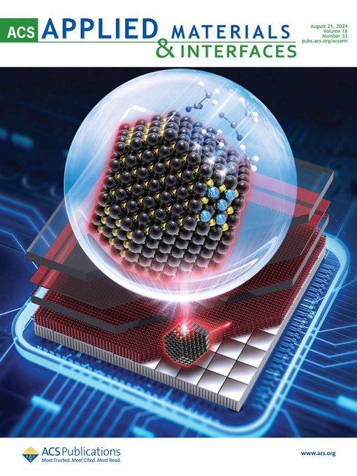

Dr. Wei Chen 陈威
Associate Professor (tenured)
@ College of Engineering Physics, Shenzhen Technology University (SZTU) 深圳技术大学
E-mail: chenwei@sztu.edu.cn
Research Scholar
@ College of Engineering, Southern University of Science and Technology (SUSTech) 南方科技大学

[1] Nano & Angstrom leveled structure characterizations via grazing-incidence X-ray scattering (GIXS) and structure modelings of thin films of colloidal quantum dots (CQDs), polymers, perovskites [Natural Science Foundation of Top Talent of SZTU, No. GDRC202340, 2024-2026]
[2] Structural disorder correlated charge carrier dynamics in CQD solid films [Guangdong Basic and Applied Basic Research Foundation, No.2021A1515110535, 2021-2024]
[3] Degradation mechanism of solution-processed semiconductor thin films via GIXS [National Natural Science Foundation of China (NSFC), No.12204318, 2023-2025]

[4] Nanocrystal thin film and IC integrations towards high resolution (< 2 um) imaging technique [Shenzhen Science and Technology Program, No. RCYX20221008092908030, 2023-2025]
[5] Noval CQD optoelectronic application development [Industrial project, 2024-2026]
© Copyright 2024, Wei Chen @ SZTU

Dr. Wei Chen is an Associate Professor (tenured) at Shenzhen Technology University (SZTU) and the PI of the Energy & Photonics Lab (EPL). Wei received a B.Sc. degree in physics at Hubei Engineering University (2006), a M.Sc. degree in materials science at Hubei University (2013), and a Ph.D. degree (Dr.rer.nat.) at the Technical University of Munich (TUM, 2020). Before moving to Germany for the Ph.D. study, Wei spent three years (2013-2016) working on CQD optoelectronic applications as a research assistant in the joint Lab led by Prof. Kai Wang & Chair Prof. Xiao Wei Sun at SUSTech where Wei received valuable experience in developing high-quality CQD materials and advanced optoelectronic applications.
Along with the PhD experience under the supervision of Prof. Peter Müller-Buschbaum, Wei had promoted the study of the structure-performance relation of solution-processed semiconductor thin films (SPSFs), including colloidal quantum dot (CQD) thin films, perovskite thin films, and organic polymer thin films, via grazing-incidence X-ray scattering (GIXS). On this basis, Wei has been interested in developing industrial-leveled photodetector applications based on novel thin films, particularly based on CQD thin films, due to their magic material properties. So far, Wei has already established broad collaborations in academics and industries.
Wei joined SZTU as an Assistant Professor in 2022 and rapidly received an exceptional promotion in 2024, becoming an Associate Professor. Wei presently lectures about fundamental materials science (Condensed Matter Physics part) such as Solid State Physics and Semiconductor Physics to undergraduate students. Students with lecture-relevant questions or research interests are always welcome to have discussions or visit the EPL. Please feel free to email Dr. Chen.
Besides, Wei is into physical sports, like football, He joined the [SUN-LIGHT] football team of SUSTech in 2021 and the team has participated in industrial football leagues in the Greater Bay Area.

[2024/09] Tao Cao, Haibo Zhu (right), and Lei Rao (left, from Dr. Haodong Tang group) participated in the seminar of OGC 2024, Shenzhen, image by Tao Cao.
[2024/08] Wei joined an Academic Conference of Optoelectronic Devices and Solar Cells in Xi'an and visited Prof. Yu Tong at Northwestern Polytechnical University.
[2024/07] Wei joined a National Academic Conference of Optoelectronic Applications in Chengdu.